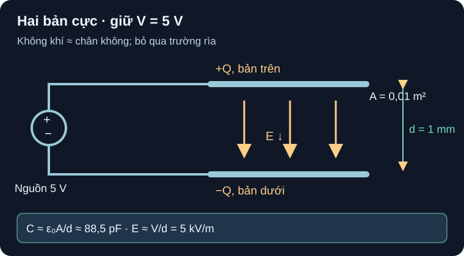

Điện Trường Đến Điện Dung
Hình học và điện môi tạo điện dung; điện áp hay điện tích được giữ cố định quyết định cách năng lượng đổi.
- Vẽ hai bản cực, chiều điện trường từ bản dương sang bản âm và xác định
Vlà hiệu điện thế giữa bản. - Tính
E≈V/d,C≈εA/dvàU=½CV²với đơn vị SI, không làm tròn trước bước cuối. - So ảnh hưởng của khoảng cách
dtrong hai bài toán giữ điện áp và giữ điện tích. - Nêu điều kiện bản rộng, trường gần đều, điện môi tuyến tính và giới hạn khi suy sang tụ công nghiệp.

Đọc sơ đồ A15-1 bằng chữ
Cực dương nguồn DC 5 V nối duy nhất với bản trên diện tích A=0,01 m²; cực âm nối bản dưới cùng diện tích. Khe giữa hai bản d=1 mm là không khí được xấp xỉ bằng chân không. V=5 V đo từ bản trên so với bản dưới; E hướng từ trên xuống. Nguồn đặt điện tích +Q lên bản trên và −Q lên bản dưới. Trong trạng thái DC ổn định của điện môi lý tưởng, dòng nạp đã về 0.
1. Từ đường sức đến công thức hình học
Với hai bản dẫn rộng hơn nhiều so với khe, bỏ qua vùng rìa, trường trong khe gần đều và hướng từ điện tích dương tới điện tích âm. Nếu nguồn giữ hiệu điện thế V, độ lớn trường E≈V/d. Với diện tích mỗi bản A và điện môi chân không ε₀≈8,854187817×10⁻¹² F/m, C≈ε₀A/d; không khí gần đúng tương tự trong ví dụ số. OpenStax §8.1, “Parallel-Plate Capacitor”, Fig. 8.5 và Eq. 8.3 dẫn công thức này từ điện trường và hiệu điện thế. Đây là xấp xỉ hình học, không phải trị số của một mã MLCC hay tụ điện phân.
Điện dung là C=Q/V cho mô hình tuyến tính. Trong miền đó, năng lượng tích ở trường là U=½CV²=Q²/(2C). OpenStax §8.3, Eq. 8.10 cho hai dạng tương đương; dạng nào dùng phụ thuộc đại lượng nguồn ngoài giữ cố định. Nếu điện môi hoặc điện dung thực đổi theo điện áp, không tự ý dùng ½CV² với một số C danh định cho toàn dải.
2. Ví dụ giải từng bước: nguồn giữ 5 V
Giả định bài toán: mỗi bản A=0,01 m², khe d=1 mm=0,001 m, nguồn lý tưởng giữ V=5 V, trường gần đều, điện môi tuyến tính có ε≈ε₀. Không có part, package, điện áp đánh thủng hoặc phép đo gắn với bộ số này.
- Điện dung:
C≈ε₀A/d=(8,854187817×10⁻¹² F/m)(0,01 m²)/(0,001 m)=8,85419×10⁻¹¹ F≈88,5 pF. - Điện trường:
E≈V/d=5 V/0,001 m=5000 V/m=5 kV/m, hướng từ bản dương xuống bản âm. - Điện tích trong model:
Q=CV≈(88,5419 pF)(5 V)=442,709 pCvề độ lớn trên mỗi bản, trái dấu nhau. - Năng lượng:
U=½CV²≈½(88,5419×10⁻¹² F)(5 V)²=1,10677×10⁻⁹ J≈1,11 nJ. Kiểm đơn vị:F·V²=C·V=J.
Số 88,5419 pF chưa làm tròn được dùng trong phép tính năng lượng. Hình lý tưởng bỏ qua fringing, đường nối, tấm hữu hạn, nhiệt và điện môi thật; giá trị 1,11 nJ chỉ là kết quả của mô hình. OpenStax §8.1 nêu giả định trường đều và mép bản; §8.3 suy năng lượng từ chính giả định đó.
3. Hoạt động tái lập: thay d, giữ A và V
Cố định
A=0,01 m²,V=5 V,ε₀=8,854187817E−12 F/m; nhập ba khoảng cáchd={0,5;1;2} mmrồi đổi sang mét trước khi tính. Không thay đổi cả A lẫn V giữa các hàng.Ở mỗi hàng tính
C=ε₀A/d,E=V/d,U=0,5CV². Vẽ C(d), E(d); cả hai tỉ lệ nghịch d khi V được giữ cố định.Đối chiếu bảng dưới với phép tính Python độc lập. Nếu dùng FEM, phải lưu geometry, vật liệu, mesh và boundary conditions; trang này chưa có kết quả FEM.
| d | C | E | U |
|---|---|---|---|
| 0,5 mm | 177,084 pF | 10 kV/m | 2,21355 nJ |
| 1 mm | 88,542 pF | 5 kV/m | 1,10677 nJ |
| 2 mm | 44,271 pF | 2,5 kV/m | 0,553387 nJ |
Ở tụ MLCC thực, nhiều lớp, điện môi và cấu trúc mép khác mô hình hai bản; điện dung có thể thay đổi với DC bias, nhiệt và tần số. Murata FAQ về DC bias chỉ ra hiệu ứng này. Không lấy 88,5 pF hay 5 kV/m để suy điện dung hiệu dụng, độ bền cách điện hoặc điện áp cho phép của một part; cần datasheet/đường C–V đúng mã và điều kiện. Hình cũng không phải hướng dẫn đặt bản cực hay cấp nguồn vật lý.
Giữ diện tích A=0,01 m², môi trường và nguồn giữ đúng 5 V như ví dụ. Tăng d từ 1 lên 2 mm. Tìm C, E, U; giải thích tại sao năng lượng đổi. Nếu ngắt nguồn trước khi tăng d để giữ Q cũ, chiều thay đổi của U có còn như vậy không?
- Điều kiện, 1 điểm: trong câu chính V cố định 5 V, bản cực/điện môi lý tưởng; d gấp đôi nên C giảm một nửa.
- Công thức và đơn vị, 1 điểm:
C=ε₀A/d,E=V/d,U=½CV²; d=0,002 m. - Số, 1 điểm:
C≈44,2709 pF≈44,3 pF,E≈2500 V/m=2,5 kV/m,U≈0,553387 nJ≈0,553 nJ. Năng lượng giảm một nửa theo mô hình ở V cố định; dùng giá trị chưa làm tròn để tránh ra 0,555 nJ. - Giới hạn và nhánh Q, 1 điểm: nếu nguồn đã ngắt và Q được giữ,
U=Q²/(2C)tăng gấp đôi khi C giảm một nửa; V khi đó tăng, không còn cố định 5 V. Trường rìa/điện môi thật và quá trình cơ học chưa được mô hình hóa.